대기환경기사 (2017-05-07 기출문제)
1과목: 대기오염 개론
1. 일반적인 가솔린 자동차 배기가스의 구성면에서 볼 때 다음 중 가장 많은 부피를 차지하는 물질은? (단, 가속상태 기준)
- 탄화수소
- 질소산화물
- 일산화탄소
- 이산화탄소
(정답률: 66%)

2. 지표 부근의 대기성분의 부피비율(농도)이 큰 것부터 순서대로 알맞게 나열된 것은? (단, N2, O2 성분은 생략)
- CO2 - Ar - CH4 - H2
- CO2 - Ar - H2 - CH4
- Ar - CO2 - He - Ne
- Ar - CO2 - Ne - He
(정답률: 66%)
3. 불안정한 대기상태에서 굴뚝의 연기방출속도가 15m/s, 굴뚝 안지름이 4m 일 때 이 연기의 상승높이는? (단, 연기의 상승높이 △H=150×(F/u3), F는 부력, 배기가스온도는 127℃, 대기온도 17℃, 풍속 6m/sec)
- 125m
- 135m
- 145m
- 155m
(정답률: 42%)
4. 다음 ( )안에 들어갈 말로 알맞은 것은?
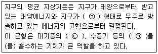
- ㉠ : 자외선, ㉡ : CO
- ㉠ : 적외선, ㉡ : CO
- ㉠ : 자외선, ㉡ : CO2
- ㉠ : 적외선, ㉡ : CO2
(정답률: 78%)
5. 다음 중 염소 또는 염화수소 배출 관련업종으로 가장 거리가 먼 것은?
- 소다 제조업
- 농약 제조업
- 화학 공업
- 시멘트 제조업
(정답률: 78%)
6. 실내공기에 영향을 미치는 오염물질에 관한 설명 중 옳지 않은 것은?
- 석면은 자연계에 존재하는 유화화(油和化)된 규산염 광물의 총칭이고, 미국에서 가장 일반적인 것으로는 아크티놀라이트(백석면)가 있다.
- 석면의 발암성은 청석면 ＞ 아모사이트 ＞ 백석면 순이다.
- Rn-222의 반감기는 3.8일이며, 그 낭핵종도 같은 종류의 알파선을 방출하지만 화학적으로는 거의 불활성이다.
- 우라늄과 라듐은 Rn-222의 발생원에 해당된다.
(정답률: 68%)
7. 다음 오염물질 중 상온에서 무색 투명하고, 순수한 경우에는 냄새가 거의 없지만 일반적으로 불쾌한 자극성 냄새를 가진 액체로서 햇빛에 파괴될 정도로 불안정하지만 부석성은 비교적 약하며, 끓는점은 약 46℃이며, 그 증기는 공기보다 약 2.64배 정도 무거운 것은?
- HCl
- Cl2
- SO2
- CS2
(정답률: 74%)
8. 석면폐증에 관한 설명으로 가장 거리가 먼 것은?
- 폐의 석면폐증에 의한 비후화이며, 흉막의 섬유화와 밀접한 관련이 있다.
- 비가역적이며, 석면노출이 중단된 후에도 악화되는 경우가 있다.
- 폐하엽에 주로 발생하며 흉막을 따라 폐중엽이나 설엽으로 퍼져간다.
- 폐의 석면화는 폐조직의 신축성을 감소시키고, 가스교환능력을 저하시켜 결국 혈액으로의 산소공급이 불충분하게 된다.
(정답률: 71%)
9. 다음 Gaussian 분산식에 대한 설명으로 가장 적합한 것은?
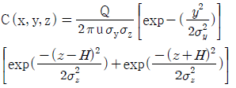
- 비정상상태에서 불연속적으로 배출하는 면오염원으로부터 바람방향이 배출면에 수평인 경우 풍하측의 지면농도를 산출하는 경우에 사용한다.
- 공중역전이 존재할 경우 역전층의 오염물질의 상향확산에 의한 일정고도 상에서의 중심축상 선오염원의 농도를 산출하는 경우에 사용한다.
- 지표면으로부터 고도 H 에 위치하는 점원-지면으로부터 반사가 있는 경우에 사용한다.
- 연속적으로 배출하는 무한의 선오염원으로부터 바람의 방향이 배출선에 수직인 경우 플륨내에서 소멸되는 풍하측의 지면농도를 산출하는 경우에 사용한다.
(정답률: 56%)
10. 시정거리에 관한 설명으로 가장 거리가 먼 것은? (단, 입자 산란에 의해서만 빛이 감쇠되고, 입자상 물질은 모두 같은 크기의 구형태로 분포하고 있다고 가정한다.)
- 시정거리는 대기 중 입자의 산란계수에 비례한다.
- 시정거리는 대기 중 입자의 농도에 반비례한다.
- 시정거리는 대기 중 입자의 밀도에 비례한다.
- 시정거리는 대기 중 입자의 직경에 비례한다.
(정답률: 64%)
11. 다음 오염물질 중 온실효과를 유발하는 것으로 가장 거리가 먼 것은?
- 이산화탄소
- CFCs
- 메탄
- 아황산가스
(정답률: 73%)
12. 먼지농도가 40㎍/m3, 상대습도가 70%일 때 가시거리는? (단, 계수 A는 1.2 적용)
- 19km
- 23km
- 30km
- 67km
(정답률: 75%)
13. 면배출원으로부터 배출되는 오염물질의 확산을 다루는 상자모델 사용 시 가정조건으로 가장 거리가 먼 것은?
- 상자 공간에서 오염물의 농도는 균일하다.
- 오염배출원은 이 상자가 차지하고 있는 지면 전역에 균등하게 분포되어 있다.
- 상자 안에서는 밑면에서 방출되는 오염물질이 상자 높이인 혼합층까지 즉시 균등하게 혼합된다.
- 배출된 오염물질이 다른 물질로 변화되는 율과 지면에 흡수되는 율은 100% 이다.
(정답률: 70%)
14. 굴뚝에서 배출되어지는 연기의 모양 중 환상형(looping)에 관한 설명으로 가장 적합한 것은?
- 전체 대기층이 강한 안정시에 나타나며, 연직확산이 적어 지표면에 순간적 고농도를 나타낸다.
- 전체 대기층이 중립일 경우에 나타나며, 연기모양의 요동이 적은 형태이다.
- 상층이 불안정, 하층이 안정일 경우에 나타나며, 바람이 다소 강하거나 구름이 낀 날 일어난다.
- 대기층이 매우 불안정시에 나타나며, 맑은 날 낮에 발생하기 쉽다.
(정답률: 66%)
15. 유효굴뚝높이 100m 인 연돌에서 배출되는 가스량은 10m3/sec, SO2의 농도가 1500ppm 일 때 Sutton식에 의한 최대지표농도는? (단, Ky = Kz = 0.⑤, 평균풍속은 10m/sec이다.)
- 약 0.008 ppm
- 약 0.035 ppm
- 약 0.078 ppm
- 약 0.116 ppm
(정답률: 59%)
16. 다음은 NO2의 광화학 반응식이다. ㉠ ~ ㉣에 알맞은 것은? (단, O는 산소원자)
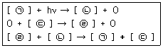
- ㉠ NO, ㉡ NO2, ㉢ O3, ㉣ O2
- ㉠ NO2, ㉡ NO, ㉢ O2, ㉣ O3
- ㉠ NO, ㉡ NO2, ㉢ O2, ㉣ O3
- ㉠ NO2, ㉡ NO, ㉢ O3, ㉣ O2
(정답률: 76%)
17. 바람을 일으키는 힘 중 기압경도력에 관한 설명으로 가장 적합한 것은?
- 수평 기압경도력은 등압선의 간격이 좁으면 강해지고, 반대로 간격이 넓어지면 약해진다.
- 지구의 자전운동에 의해서 생기는 가속도에 의한 힘을 말한다.
- 극지방에서 최소가 되며 적도지방에서 최대가 된다.
- gradient wind 라고도 하며, 대기의 운동방향과 반대의 힘인 마찰력으로 인하여 발생된다.
(정답률: 64%)
18. 바람에 관한 다음 설명 중 옳지 않은 것은?
- 북반구의 경도풍은 저기압에서는 반시계방향으로 회전하면서 위쪽으로 상승하면서 분다.
- 마찰층내 바람은 높이에 따라 시계방향으로 각천이가 생겨나며, 위로 올라갈수록 실제 풍향은 점점 지균풍과 가까워진다.
- 산풍은 경사면 (→) 계곡 (→) 주계곡으로 수렴하면서 풍속이 가속되기 때문에 낮에 산위쪽으로 부는 곡풍보다 더 강하다.
- 해륙풍이 부는 원인은 낮에는 육지보다 바다가 빨리 더워져서 바다의 공기가 상승하기 때문에 바다에서 육지로 8~15km 정도까지 바람(해풍)이 분다.
(정답률: 64%)
19. 상온에서 무색이며, 자극성 냄새를 가진 기체로서 비중이 약 1.03(공기=1)인 오염물질은?
- 아황산가스
- 폼알데하이드
- 이산화탄소
- 염소
(정답률: 70%)
20. 대기오염이 식물에 미치는 영향에 관한 설명으로 가장 거리가 먼 것은?
- SO2는 회백색반점을 생성하며, 피해부분은 엽육세포이다.
- PAN은 유리화, 은백색 광택을 나타내며, 주로 해면조직에 피해를 준다.
- NO2는 불규칙 흰색 또는 갈색으로 변화되며, 피해부분은 엽육세포이다.
- HF는 SO2와 같이 잎 안쪽부분에 반점을 나타내기 시작하며, 늙은 잎에 특히 민감하며, 밤에 피해가 현저하다.
(정답률: 79%)
2과목: 연소공학
21. 유동층연소에서 부하변동에 대한 적응성이 좋지 않은 단점을 보완하기 위한 방법으로 가장 거리가 먼 것은?
- 공기분산판을 분할하여 층을 부분적으로 유동시킨다.
- 층 내의 연료비율을 고정시킨다.
- 유동층을 몇 개의 셀로 분할하여 부하에 따라 작동시키는 수를 변화시킨다.
- 층의 높이를 변화시킨다.
(정답률: 72%)
22. 폐타이어를 연료화 하는 주된 방식과 가장 거리가 먼 것은?
- 가압분해 증류 방식
- 액화법에 의한 연료추출 방식
- 열분해에 의한 오일추출 방식
- 직접 연소 방식
(정답률: 58%)
23. 확산형 가스버너 중 포트형에 관한 설명으로 가장 거리가 먼 것은?
- 버너 자체가 로벽과 함께 내화벽돌로 조립되어 로 내부에 개구된 것이며, 가스와 공기를 함께 가열할 수 있는 이점이 있다.
- 고발열량 탄화수소를 사용할 경우에는 가스압력을 이용하여 노즐로부터 고속으로 분출하게 하여 그 힘으로 공기를 흡인하는 방식을 취한다.
- 밀도가 큰 공기 출구는 상부에, 밀도가 작은 가스 출구는 하부에 배치되도록 한다.
- 구조상 가스와 공기압이 높은 경우에 사용한다.
(정답률: 38%)
24. 수소 12%, 수분 1%를 함유한 중유 1kg의 발열량을 열량계로 측정하였더니 10000 kcal/kg이었다. 비정상적인 보일러의 운전으로 인해 불완전연소에 의한 손실열량이 1400 kcal/kg이라면 연소효율은?
- 82%
- 85%
- 87%
- 90%
(정답률: 43%)
25. 기체연료에 관한 설명으로 가장 거리가 먼 것은?
- 연료 속의 유황함유량이 적어 연소 배기가스 중 SO2 발생량이 매우 적다.
- 다른 연료에 비해 저장이 곤란하며, 공기와 혼합해서 점화하면 폭발 등의 위험도 있다.
- 메탄을 주성분으로 하는 천연가스를 1기압 하에서 -168℃ 정도로 냉각하여 액화시킨 연료를 LNG 라 한다.
- 발생로가스란 코크스나 석탄을 불완전연소해서 얻는 가스로 주성분은 CH4와 H2 이다.
(정답률: 66%)
26. 다음 중 확산연소에 사용되는 버너로서 주로 천연가스와 같은 고발열량의 가스를 연소시키는데 사용되는 것은?
- 건타입 버너
- 선회 버너
- 방사형 버너
- 고압 버너
(정답률: 65%)
27. 유압분무식 버너에 관한 설명으로 옳지 않은 것은?
- 유량조절범위가 환류식의 경우는 1:3, 비환류식의 경우는 1:2 정도여서 부하변동에 적응하기 어렵다.
- 연료의 분사유량은 15~2000kL/h 정도이다.
- 분무각도가 40~90°정도로 크다.
- 연료의 점도가 크거나 유압이 5kg/cm2 이하가 되면 분무화가 불량하다.
(정답률: 67%)
28. Octane을 공기 중에서 완전연소 시킬 때 이론 연소용 공기와 연료의 질량비(이론 연소용 공기의 질량/연료의 질량, kg/kg)는?
- 약 5
- 약 10
- 약 15
- 약 20
(정답률: 59%)
29. 15℃ 물 10L를 데우는데 10L의 프로판 가스가 사용되었다면 물의 온도는 몇 ℃로 되는가? (단, 프로판(C3H8) 가스의 발열량은 488.53kcal/mole 이고, 표준상태의 기체로 취급하며, 발열량은 손실 없이 전량 물을 가열하는데 사용되었다고 가정한다.)
- 58.8
- 49.8
- 36.8
- 21.8
(정답률: 33%)
30. 다음 중 과잉산소량(잔존 O2량)을 옳게 표시한 것은? (단, A : 실제공기량, Ao : 이론공기량, m : 공기과잉계수(m ＞ 1), 표준상태이며, 부피기준임)
- 0.21mAo
- 0.21(m-1)Ao
- 0.21mA
- 0.21(m-1)A
(정답률: 74%)
31. 연소반응에서 반응속도상수 k를 온도의 함수인 다음 반응식으로 나타낸 법칙은?
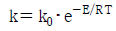
- Henry's Law
- Fick's Law
- Arrhenius's Law
- Van der Waals's Law
(정답률: 68%)
32. 프로판(C3H8)과 에탄(C2H6)의 혼합가스 1Sm3를 완전연소 시킨 결과 배기가스 중 이산화탄소(CO2)의 생성량이 2.8Sm3 이었다. 이 혼합가스의 mol비(C3H8/C2H6)는 얼마인가?
- 0.25
- 0.5
- 2.0
- 4.0
(정답률: 48%)
33. 화격자연소 중 상입식 연소에 관한 설명으로 옳지 않은 것은?
- 석탄의 공급방향이 1차 공기의 공급 방향과 반대로서 수동 스토커 및 산포식 스토커가 해당된다.
- 공급된 석탄은 연소 가스에 의해 가열되어 건류층에서 휘발분을 방출한다.
- 코크스화한 석탄은 환원층에서 아래의 산화층에서 발생한 탄산가스를 일산화탄소로 환원한다.
- 착화가 어렵고, 저품질 석탄의 연소에는 부적합하다.
(정답률: 56%)
34. 다음 설명하는 연소장치로 가장 적합한 것은?
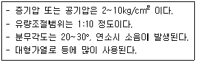
- 고압공기식 버너
- 유압식 버너
- 저압공기분무식 버너
- 슬래그탭 버너
(정답률: 78%)
35. 석탄의 성질에 관한 설명으로 옳지 않은 것은?
- 비열은 석탄화도가 진행됨에 따라 증가하며, 통상 0.30~0.35kcal/kg·℃ 정도이다.
- 건조된 것은 석탄화도가 진행된 것일수록 착화온도가 상승한다.
- 석탄류의 비중은 석탄화도가 진행됨에 따라 증가되는 경향을 보인다.
- 착화온도는 수분함유량에 영향을 크게 받으며, 무연탄의 착화온도는 보통 440~550℃ 정도이다.
(정답률: 51%)
36. 메탄의 고위발열량이 9900kcal/Sm3 이라면 저위발열량(kcal/Sm3)은?
- 8540
- 8620
- 8790
- 8940
(정답률: 66%)
37. 다음 액체연료 C/H 비의 순서로 옳은 것은? (단, 큰 순서 > 작은 순서)
- 중유 ＞ 등유 ＞ 경유 ＞ 휘발유
- 중유 ＞ 경유 ＞ 등유 ＞ 휘발유
- 휘발유 ＞ 등유 ＞ 경유 ＞ 중유
- 휘발유 ＞ 경유 ＞ 등유 ＞ 중유
(정답률: 64%)
38. 다음 연료 중 착화온도가 가장 높은 것은?
- 갈탄(건조)
- 중유
- 역청탄
- 메탄
(정답률: 48%)
39. 다음 중 흑연, 코크스, 목탄 등과 같이 대부분 탄소만으로 되어 있고, 휘발성분이 거의 없는 연소의 형태로 가장 적합한 것은?
- 자기연소
- 확산연소
- 표면연소
- 분해연소
(정답률: 75%)
40. 연소시 발생되는 NOx는 원인과 생성기전에 따라 3가지로 분류하는데, 분류항목에 속하지 않는 것은?
- fuel NOx
- noxious NOx
- prompt NOx
- thermal NOx
(정답률: 76%)
3과목: 대기오염 방지기술
41. 세정집진장치 중 액가스비가 10~50L/m3 정도로 다른 가압수식에 비해 10배 이상이며, 다량의 세정액이 사용되어 유지비가 고가이므로 처리가스량이 많지 않을 때 사용하는 것은?
- Venturi scrubber
- Theisen washer
- Jet scrubber
- Impulse scrubber
(정답률: 62%)
42. 싸이클론에서 50%의 집진효율로 제거되는 입자의 최소입경을 무엇이라 부르는가?
- critical diameter
- cut size diameter
- average size diameter
- analytical diameter
(정답률: 80%)
43. 표준형 평판 날개형보다 비교적 고속에서 가동되고, 후향 날개형을 정밀하게 변형시킨 것으로써 원심력 송풍기 중 효율이 가장 좋아 대형 냉난방 공기조화장치, 산업용 공기청정장치 등에 주로 이용되며, 에너지 절감효과가 뛰어난 송풍기 유형은?
- 비행기 날개형(airfoil blade)
- 방사 날개형(radial blade)
- 프로펠러형(propeller)
- 전향 날개형(forward curved)
(정답률: 62%)
44. 흡수장치의 종류 중 기체분산형 흡수장치에 해당하는 것은?
- venturi scrubber
- spray tower
- packed tower
- plate tower
(정답률: 63%)
45. 8개 실로 분리된 충격 제트형 여과집진장치에서 전체 처리가스량 8000m3/min, 여과속도 2m/min로 처리하기 위하여 직경 0.25m, 길이 12m 규격의 필터 백(filter bag)을 사용하고 있다. 이 때 집진장치의 각 실(house)에 필요한 필터백의 개수는? (단, 각 실의 규격은 동일함, 필터백은 짝수로 선택함)
- 50
- 54
- 58
- 64
(정답률: 55%)
46. 분무탑에 관한 설명으로 옳지 않은 것은?
- 구조가 간단하고 압력손실이 적은 편이다.
- 침전물이 생기는 경우에 적합하며, 충전탑에 비해 설비비 및 유지비가 적게 드는 장점이 있다.
- 분무에 큰 동력이 필요하고, 가스의 유출시 비말동반이 많다.
- 분무액과 가스의 접촉이 균일하여 효율이 우수하다.
(정답률: 41%)
47. 직경 10㎛인 입자의 침강속도가 0.5cm/sec 였다. 같은 조성을 지닌 30㎛입자의 침강속도는? (단, 스토크스 침강속도식 적용)
- 1.5 cm/sec
- 2 cm/sec
- 3 cm/sec
- 4.5 cm/sec
(정답률: 51%)
48. 다음은 휘발유엔진 배기가스에 영향을 미치는 사항에 관한 설명이다. ( )안에 알맞은 것은?
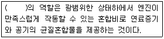
- Wankel engine
- Charger
- Carburetor
- ABS
(정답률: 63%)
49. 다른 VOC 제거장치와 비교하여 생물여과의 장·단점으로 가장 거리가 먼 것은?
- CO 및 NOx 등을 포함하여 생성되는 오염부산물이 적거나 없다.
- 습도제어에 각별한 주의가 필요하다.
- 고농도 오염물질의 처리에 적합하다.
- 생체량 증가로 인해 장치가 막힐 수 있다.
(정답률: 72%)
50. 여과집진장치의 탈진방식 중 간헐식에 관한 설명으로 옳지 않은 것은?
- 간헐식 중 진동형은 여포의 음파진동, 횡진동, 상하진동에 의해 포집된 먼지층을 털어내는 방식으로 접착성 먼지의 집진에는 사용할 수 없다.
- 집진실을 여러 개의 방으로 구분하고 방 하나씩 처리가스의 흐름을 차단하여 순차적으로 탈진하는 방식이며, 여포의 수명은 연속식에 비해 길다.
- 간헐식 중 역기류형의 적정 여과속도는 3~5cm/s이고, glass fiber는 역기류형 중 가장 저항력이 강하다.
- 연속식에 비해 먼지의 재비산이 적고, 높은 집진율을 얻을 수 있다.
(정답률: 54%)
51. 유체의 점성에 관한 설명으로 옳지 않은 것은?
- 점성은 유체분자 상호간에 작용하는 분자응집력과 인접 유체층간의 분자운동에 의하여 생기는 운동량 수송에 기인한다.
- 액체의 점성계수는 주로 분자응집력에 의하므로 온도의 상승에 따라 낮아진다.
- Hagen의 점성법칙은 점성의 결과로 생기는 전단응력은 유체의 속도구배에 반비례한다.
- 점성계수는 온도에 의해 영향을 받지만 압력과 습도에는 거의 영향을 받지 않는다.
(정답률: 54%)
52. 벤젠 소각시 속도상수 k가 540℃에서 0.00011/sec, 640℃에서 0.14/sec 일 때, 벤젠 소각에 필요한 활성화에너지(kcal/mol)는? (단, 벤젠의 연소반응은 1차 반응이라 가정하고 속도상수 k는 다음 Arrhenius 식으로 표현된다. k = A·exp(-E/RT))
- 95
- 1⑤
- 115
- 130
(정답률: 44%)
53. 전기로에 설치된 백필터의 입구 및 출구 가스량과 먼지 농도가 다음과 같을 때 먼지의 통과율은?
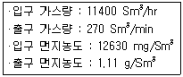
- 10.5%
- 11.1%
- 12.5%
- 13.1%
(정답률: 52%)
54. 하전식 전기집진장치에 관한 설명으로 옳지 않은 것은?
- 1단식은 역전리의 억제는 효과적이나 재비산 방지는 곤란하다.
- 2단식은 비교적 함진농도가 낮은 가스처리에 유용하다.
- 2단식은 1단식에 비해 오존의 생성을 감소시킬 수 있다.
- 1단식은 보통 산업용으로 많이 쓰인다.
(정답률: 54%)
55. 알루미나 담채에 탄산나트륨을 3.5~3.8% 정도 첨가하여 제조된 흡착제를 사용하여 SO2와 NOx를 동시에 제거하는 공정은?
- 석회석 세정법
- Wellman-Lord법
- Dual Acid scrubbing
- NOXSO 공정
(정답률: 70%)
56. 배출가스 중 염화수소의 농도가 500ppm 이다. 배출허용기준이 100mg/Sm3일 때, 최소한 몇%를 제거해야 배출허용기준을 만족시킬 수 있는가? (단, 표준상태 기준이며, 기타 조건은 동일하다.)
- 약 68%
- 약 78%
- 약 88%
- 약 98%
(정답률: 49%)
57. 98% 효율을 가진 전기집진기로 유량이 5000 m3/min인 공기흐름을 처리하고자 한다. 표류속도(We)가 6.0cm/sec 일 때, Deutsch식에 의한 필요 집진면적은 얼마나 되겠는가?
- 약 3938 m2
- 약 4431 m2
- 약 4937 m2
- 약 5433 m2
(정답률: 39%)
58. 촉매연소법에 관한 설명으로 거리가 먼 것은?
- 열소각법에 비해 체류시간이 훨씬 짧다.
- 열소각법에 비해 NOx 생성량을 감소시킬 수 있다.
- 팔라듐, 알루미나 등은 촉매에 바람직하지 않은 원소이다.
- 열소각법에 비해 점화온도를 낮춤으로써 운영비용을 절감할 수 있다.
(정답률: 65%)
59. 다음 중 송풍기에 관한 법칙 표현으로 옳지 않은 것은? (단, 송풍기의 크기와 유체의 밀도는 일정하며, Q : 풍량, N : 회전수, W : 동력, V : 배출속도, ΔP : 정압)
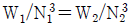
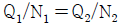
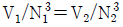
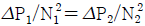
(정답률: 60%)
60. 다음은 흡착제에 관한 설명이다. ( )안에 가장 적합한 것은?
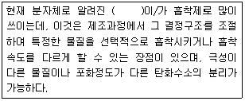
- Activated carbon
- Synthetic Zeolite
- Silica gel
- Activated Alumina
(정답률: 58%)
4과목: 대기오염 공정시험기준(방법)
61. 이론단수가 1600인 분리관이 있다. 보유시간이 20분인 피크의 좌우변곡점에서 접선이 자르는 바탕선의 길이가 10mm 일 때, 기록지 이동속도는? (단, 이론단수는 모든 성분에 대하여 같다.)
- 2.5 mm/min
- 5 mm/min
- 10 mm/min
- 15 mm/min
(정답률: 48%)
62. 다음은 환경대기 중 다환방향족탄화수소류(PAHs)-기체크로마토그래피/질량분석법에 사용되는 용어의 정의이다. ( )안에 알맞은 것은?
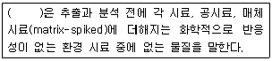
- 내부표준물질(IS, internal standard)
- 외부표준물질(ES, external standard)
- 대체표준물질(surrogate)
- 속실렛(soxhlet) 추출물질
(정답률: 63%)
63. 환경대기 중 석면시험방법 중 위상차현미경법을 통한 계수대상물질의 식별 방법에 관한 설명으로 옳지 않은 것은? (단, 적정한 분석능력을 가진 위상차현미경 등을 사용한 경우)
- 단섬유인 경우 구부러져 있는 섬유는 곡선에 따라 전체 길이를 재어서 판정 한다.
- 헝클어져 다발을 이루고 있는 경우로서 섬유가 헝클어져 정확한 수를 헤아리기 힘들 때에는 0개로 판정한다.
- 섬유에 입자가 부착하고 있는 경우 입자의 폭이 3㎛를 넘는 것은 1개로 판정한다.
- 섬유가 그래티큘 시야의 경계선에 물린 경우 그래티큘 시야 안으로 한쪽 끝만 들어와 있는 섬유는 1/2개로 인정한다.
(정답률: 59%)
64. 다음은 환경대기 중 유해 휘발성유기화합물의 시험방법(고체흡착법)에서 사용되는 용어의 정의이다. ( )안에 알맞은 것은?
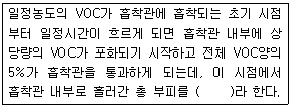
- 머무름부피(Retention Volume)
- 안전부피(Safe Sample Volume)
- 파과부피(Breakthrough Volume)
- 탈착부피(Desorption Volume)
(정답률: 66%)
65. 온도표시에 관한 설명으로 옳지 않은 것은?
- "냉후"(식힌 후)라 표시되어 있을 때는 보온 또는 가열 후 실온까지 냉각된 상태를 뜻한다.
- 상온은 15~25℃, 실온은 1~35℃로 한다.
- 찬 곳은 따로 규정이 없는 한 0~5℃를 뜻한다.
- 온수는 60~70℃ 이고, 열수는 약 100℃를 말한다.
(정답률: 72%)
66. 다음은 비분산 적외선 분광분석법 중 응답시간(response time)의 성능 기준을 나타낸 것이다. ㉠, ㉡에 알맞은 것은?
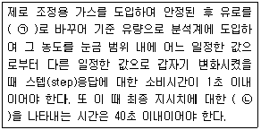
- ㉠ 비교가스, ㉡ 10%의 응답
- ㉠ 스팬가스, ㉡ 10%의 응답
- ㉠ 비교가스, ㉡ 90%의 응답
- ㉠ 스팬가스, ㉡ 90%의 응답
(정답률: 72%)
67. 배출가스 중 다이옥신 및 퓨란류 분석을 위한 시료채취방법에 관한 설명으로 옳지 않은 것은?
- 흡인노즐에서 흡인하는 가스의 유속은 측정점의 배출가스유속에 대해 상대 오차 -5 ~ +5%의 범위내로 한다.
- 최종배출구에서의 시료채취 시 흡인기체량은 표준상태(0℃, 1기압)에서 4시간 평균 3m3 이상으로 한다.
- 덕트내의 압력이 부압인 경우에는 흡인장치를 덕트밖으로 빼낸 후에 흡인펌프를 정지시킨다.
- 배출가스 시료를 채취하는 동안에 각 흡수병은 얼음 등으로 냉각시키며, XAD-2수지 흡착관은 -50℃ 이하로 유지하여야 한다.
(정답률: 53%)
68. 굴뚝 배출가스 중 CS2의 측정에 사용되는 흡수액은? (단, 자외선/가시선 분석방법으로 측정)
- 붕산용액
- 가성소다 용액
- 황산동 용액
- 다이에틸아민구리 용액
(정답률: 74%)
69. 굴뚝 배출가스 중 먼지를 시료채취장치 1형을 사용한 반자동식 채취기에 의한 방법으로 측정할 경우 원통형 여과지의 전처리 조건으로 가장 적합한 것은? (단, 배출가스 온도가 (110±5)℃ 이상으로 배출된다.)
- (80±5)℃에서 충분히(1~3시간) 건조
- (100±5)℃에서 30분간 건조
- (120±5)℃에서 30분간 건조
- (110±5)℃에서 충분히(1~3시간) 건조
(정답률: 69%)
70. 굴뚝 배출가스 중에 포함된 폼알데하이드 및 알데하이드류의 분석방법으로 거리가 먼 것은?
- 고성능액체크로마토그래피법
- 크로모트로핀산 자외선/가시선분광법
- 나프틸에틸렌디아민법
- 아세틸아세톤 자외선/가시선분광법
(정답률: 55%)
71. 굴뚝 배출가스 중 황화수소를 아이오딘 적정법으로 분석할 때 종말점의 판단을 위한 지시약은?(관련 규정 개정전 문제로 여기서는 기존 정답인 3번을 누르면 정답 처리됩니다. 자세한 내용은 해설을 참고하세요.)
- 아르세나조 Ⅲ
- 메틸렌 레드
- 녹말 용액
- 메틸렌 블루
(정답률: 58%)
72. 굴뚝배출가스 내의 질소산화물을 연속적으로 자동측정하는 방법 중 화학발 광분석계의 구성에 관한 설명으로 거리가 먼 것은?
- 유량제어부는 시료가스 유량제어부와 오존가스 유량제어부가 있으며 이들은 각각 저항관, 압력조절기, 니들밸브, 면적유량계, 압력계 등으로 구성되어 있다.
- 반응조는 시료가스와 오존가스를 도입하여 반응시키기 위한 용기로서 이 반응에 의해 화학발광이 일어나고 내부압력조건에 따라 감압형과 상압형이 있다.
- 오존발생기는 산소가스를 오존으로 변환시키는 역할을 하며, 에너지원으로서 무성방전관 또는 자외선발생기를 사용한다.
- 검출기에는 화학발광을 선택적으로 투과시킬 수 있는 발광필터가 부착되어 있으며 전기신호를 발광도로 변환시키는 역할을 한다.
(정답률: 56%)
73. 흡광차분광법에 관한 설명으로 옳지 않은 것은?
- 일반 흡광광도법은 적분적이며 흡광차분광법은 미분적이라는 차이가 있다.
- 측정에 필요한 광원은 180 ~ 2850nm 파장을 갖는 제논램프를 사용한다.
- 분석장치는 분석기와 광원부로 나누어지며 분석기 내부는 분광기, 샘플 채취부, 검지부, 분석부, 통신부 등으로 구성된다.
- 광원부는 발·수광부 및 광케이블로 구성된다.
(정답률: 60%)
74. 크로모트로핀산 자외선/가시선분광법으로 굴뚝배출가스 중 폼알데하이드를 정량할 때 흡수발색액 제조에 필요한 시약은?
- CH3COOH
- H2SO4
- NaOH
- NH4OH
(정답률: 52%)
75. 기체크로마토그래피의 장치구성에 관한 설명으로 가장 거리가 먼 것은?
- 방사성 동위원소를 사용하는 검출기를 수용하는 검출기 오븐에 대하여는 온도조절기구와는 별도로 독립작용 할 수 있는 과열방지기구를 설치해야 한다.
- 분리관오븐의 온도조절 정밀도는 ±0.5℃ 범위 이내 전원 전압변동 10%에 대하여 온도변화 ±0.5℃ 범위 이내(오븐의 온도가 150℃ 부근일 때)이어야 한다.
- 보유시간을 측정할 때는 10회 측정하여 그 평균치를 구한다. 일반적으로 5분~30분 정도에서 측정하는 봉우리의 보유시간은 반복시험을 할 때 ±5% 오차범위 이내이어야 한다.
- 불꽃이온화 검출기는 대부분의 화합물에 대하여 열전도도 검출기보다 약 1000배 높은 감도를 나타내고 대부분의 유기화합물의 검출이 가능하므로 흔히 사용된다.
(정답률: 64%)
76. 다음은 중금속 분석을 위한 전처리 방법 중 저온회화법에 관한 설명이다. ㉠, ㉡에 알맞은 것은?
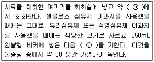
- ㉠ 200℃ 이하, ㉡ 황산(2+1) 70mL 및 과망간산칼륨(0.025N) 5mL
- ㉠ 450℃ 이하, ㉡ 황산(2+1) 70mL 및 과망간산칼륨(0.025N) 5mL
- ㉠ 200℃ 이하, ㉡ 염산(1+1) 70mL 및 과산화수소수(30%) 5mL
- ㉠ 450℃ 이하, ㉡ 염산(1+1) 70mL 및 과산화수소수(30%) 5mL
(정답률: 46%)
77. 굴뚝에서 배출되는 건조배출가스의 유량을 연속적으로 자동 측정하는 방법에 관한 설명으로 옳지 않은 것은?
- 건조배출가스 유량은 배출되는 표준상태의 건조배출가스량[Sm3 (5분적산치)]으로 나타낸다.
- 열선식 유속계를 이용하는 방법에서 시료채취부는 열선과 지주 등으로 구성되어 있으며, 열선은 직경 2~10㎛, 길이 약 1mm의 텅스텐이나 백금선 등이 쓰인다.
- 유량의 측정방법에는 피토관, 열손유속계, 와류유속계를 이용하는 방법이 있다.
- 와류유속계를 사용할 때에는 압력계 및 온도계는 유량계 상류측에 설치해야 하고, 일반적으로 온도계는 글로브식을, 압력계는 부르돈관식을 사용한다.
(정답률: 48%)
78. 어떤 사업장의 굴뚝에서 실측한 배출가스 중 A오염물질의 농도가 600ppm이었다. 이 때 표준산소농도는 6%, 실측산소농도는 8%이었다면이 사업장의 배출가스 중 보정된 A오염물질의 농도는? (단, A오염물질은 배출허용기준 중 표준산소농도를 적용받는 항목이다.)
- 약 486ppm
- 약 520ppm
- 약 692ppm
- 약 768ppm
(정답률: 49%)
79. A굴뚝의 측정공에서 피토관으로 가스의 압력을 측정해 보니 동압이 15mmH2O 이었다. 이 가스의 유속은? (단, 사용한 피토관의 계수(C)는 0.85 이며, 가스의 단위체적당 질량은 1.2kg/m3로 한다.)
- 약 12.3m/s
- 약 13.3m/s
- 약 15.3m/s
- 약 17.3m/s
(정답률: 56%)
80. 다음은 굴뚝배출가스 중 아황산가스를 연속적으로 자동측정하는 방법 중 불꽃광도분석계의 측정원리에 관한 설명이다. ㉠, ㉡에 알맞은 것은?
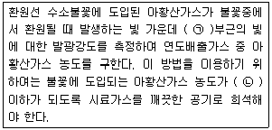
- ㉠ 254nm, ㉡ 5~6 mg/min
- ㉠ 394nm, ㉡ 5~6 mg/min
- ㉠ 254nm, ㉡ 5~6 ㎍/min
- ㉠ 394nm, ㉡ 5~6 ㎍/min
(정답률: 50%)
5과목: 대기환경관계법규
81. 대기환경보전법상 자동차의 운행정지에 관한 사항이다. ( )에 알맞은 것은?
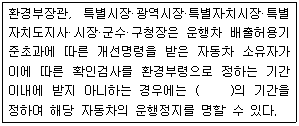
- 5일 이내
- 7일 이내
- 10일 이내
- 15일 이내
(정답률: 45%)
82. 대기환경보전법규상 대기오염경보 발령 시 포함되어야 할 사항으로 가장 거리가 먼 것은? (단, 기타사항은 제외)
- 대기오염경보단계
- 대기오염경보의 경보대상기간
- 대기오염경보의 대상지역
- 대기오염경보단계별 조치사항
(정답률: 62%)
83. 실내공기질 관리법규상 "에틸벤젠"의 신축공동주택의 실내공기질 권고기준은?
- 30㎍/m3 이하
- 210㎍/m3 이하
- 300㎍/m3 이하
- 360㎍/m3 이하
(정답률: 63%)
84. 다음은 악취방지법규상 복합악취에 대한 배출허용기준 및 엄격한 배출허용 기준의 설정 범위이다. ㉠, ㉡에 알맞은 것은?
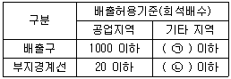
- ㉠ 500, ㉡ 10
- ㉠ 500, ㉡ 15
- ㉠ 750, ㉡ 10
- ㉠ 750, ㉡ 15
(정답률: 51%)
85. 대기환경보전법규상 배출허용기준초과에 따른 개선명령을 받은 경우로서 개선하여야 할 사항이 배출시설 또는 방지시설일 때 개선계획서에 포함되어야 할 사항 또는 첨부서류로 가장 거리가 먼 것은?
- 공사기간 및 공사비
- 측정기기 관리담당자 변경사항
- 대기오염물질의 처리방식 및 처리효율
- 배출시설 또는 방지시설의 개선명세서 및 설계도
(정답률: 54%)
86. 대기환경보전법령상 사업장별 구분 또는 사업장별 환경기술인의 자격기준에 관한 설명으로 옳지 않은 것은?
- 4종사업장은 대기오염물질발생량의 합계가 연간 2톤 이상 10톤 미만인 사업장을 말한다.
- 공동방지시설에서 각 사업장의 대기오염물질 발생량의 합계가 4종사업장과 5종사업장의 규모에 해당하는 경우에는 3종사업장에 해당하는 기술인을 두어야 한다.
- 1종사업장과 2종사업장 중 1개월 동안 실제 작업한 날만을 계산하여 1일 평균 17시간 이상 작업하는 경우에는 해당 사업장의 기술인을 각각 2명 이상 두어야 한다.
- 전체 배출시설에 대하여 방지시설 설치면제를 받은 사업장과 배출시설에서 배출되는 오염물질 등을 공동방지시설에서 처리하는 사업장은 2종 사업장에 해당하는 기술인을 두어야 한다.
(정답률: 58%)
87. 대기환경보전법규상 대기배출시설을 설치 운영하는 사업자에 대하여 조업 정지를 명하여야 하는 경우로서 그 조업정지가 주민의 생활, 기타 공익에 현저한 지장을 초래할 우려가 있다고 인정되는 경우 조업정지처분에 갈음하여 과징금을 부과할 수 있다. 이 때 과징금의 부과금액 산정시 적용되지 않는 항목은?
- 조업정지일수
- 1일당 부과금액
- 오염물질별 부과금액
- 사업장 규모별 부과계수
(정답률: 52%)
88. 대기환경보전법규상 자동차 운행정지표지의 바탕색상은?
- 회색
- 녹색
- 노란색
- 흰색
(정답률: 70%)
89. 대기환경보전법규상 대기오염방지시설과 가장 거리가 먼 것은? (단, 기타의 경우는 제외)
- 중력집진시설
- 여과집진시설
- 간접연소에 의한 시설
- 산화환원에 의한 시설
(정답률: 56%)
90. 대기환경보전법상 벌칙기준 중 7년 이하의 징역이나 1억원 이하의 벌금에처하는 것은?
- 대기오염물질의 배출허용기준 확인을 위한 측정기기의 부착 등의 조치를 하지 아니한 자
- 황 연료사용 제한조치 등의 명령을 위반한 자
- 제작차 배출허용기준에 맞지 아니하게 자동차를 제작한 자
- 배출가스 전문정비사업자로 등록하지 아니하고 정비·점검 또는 확인검사 업무를 한 자
(정답률: 65%)
91. 대기환경보전법령상 자동차 배출가스 규제 등에서 매출액 산정 및 위반행위 정도에 따른 과징금의 부과기준과 관련된 사항으로 옳지 않은 것은?(관련 규정 갱전전 문제로 여기서는 기존 정답인 2번을 누르면 정답 처리 됩니다. 자세한 내용은 해설을 참고하세요.)
- 매출액 산정방법에서 "매출액"이란 그 자동차의 최초 제작시점부터 적발시점까지의 총 매출액으로 한다.
- 제작차에 대하여 인증을 받지 아니하고 자동차를 제작·판매한 행위에 대해서 위반행위의 정도에 따른 가중부과계수는 0.5를 적용한다.
- 제작차에 대하여 인증을 받은 내용과 다르게 자동차를 제작·판매한 행위에 대해서 위반행위의 정도에 따른 가중부과계수는 0.5를 적용한다.
- 과징금의 산정방법 = 총매출액 × 3/100 × 가중부과계수를 적용한다.
(정답률: 56%)
92. 실내공기질 관리법규상 "의료기관"의 라돈(Bq/m3)항목 실내공기질 권고기준은?
- 148 이하
- 400 이하
- 500 이하
- 1000 이하
(정답률: 65%)
93. 대기환경보전법규상 휘발성유기화합물 배출시설의 변경신고를 해야 하는 경우가 아닌 것은?
- 사업장의 명칭 또는 대표자를 변경하는 경우
- 휘발성유기화합물 배출시설을 폐쇄하는 경우
- 휘발성유기화합물의 배출억제·방지시설을 변경하는 경우
- 설치신고를 한 배출시설 규모의 합계 또는 누계보다 100분의 30이상 증설 하는 경우
(정답률: 46%)
94. 대기환경보전법규상 부식·마모로 인하여 대기오염물질이 누출되는 배출시설을 정당한 사유 없이 방치한 경우의 3차 행정처분기준은?
- 개선명령
- 경고
- 조업정지 10일
- 조업정지 30일
(정답률: 50%)
95. 대기환경보전법상 공익에 현저한 지장을 줄 우려가 인정되는 경우 등으로 인해 조업정지 처분에 갈음하여 부과할 수 있는 과징금처분에 관한 설명으로 옳지 않은 것은?
- 최대 2억원까지 과징금을 부과할 수 있다.
- 과징금을 납부기한까지 납부하지 아니한 경우는 최대 3월 이내 기간의 조업 정지처분을 명할 수 있다.
- 사회복지시설 및 공공주택의 냉난방시설을 설치, 운영하는 사업자에 대하여 부과할 수 있다.
- 의료법에 따른 의료기관의 배출시설도 부과할 수 있다.
(정답률: 46%)
96. 대기환경보전법령상 초과부과금을 산정할 때 다음 오염물질 중 1킬로그램당 부과금액이 가장 높은 것은?
- 시안화수소
- 암모니아
- 불소화합물
- 이황화탄소
(정답률: 64%)
97. 환경부장관이 대기환경보전법규정에 의하여 사업장에서 배출되는 대기오염 물질을 총량으로 규제하고자 할 때에 반드시 고시할 사항과 거리가 먼 것은?
- 총량규제구역
- 측정망 설치계획
- 총량규제 대기오염물질
- 대기오염물질의 저감계획
(정답률: 49%)
98. 대기환경보전법령상 대기환경기준으로 옳지 않은 것은?
- 미세먼지(PM-10) - 연간평균치 50mg/m3 이하
- 아황산가스(SO2) - 연간평균치 0.02ppm 이하
- 일산화탄소(CO) - 1시간평균치 25ppm 이하
- 오존(O3) - 1시간평균치 0.1ppm 이하
(정답률: 38%)
99. 대기환경보전법규상 측정망 설치계획을 고시할 때 포함되어야 할 사항과 거리가 먼 것은? (단, 그 밖의 사항 등은 제외)
- 측정망 배치도
- 측정망 설치시기
- 측정망 교체주기
- 측정소를 설치할 토지 또는 건축물의 위치 및 면적
(정답률: 58%)
100. 대기환경보전법상 제작차에 대한 인증시험대행기관의 지정취소나 업무정지 기준에 해당하지 않는 것은?
- 매연 단속결과 간헐적으로 배출허용기준을 초과할 경우
- 거짓이나 그 밖의 부정한 방법으로 지정을 받은 경우
- 다른 사람에게 자신의 명의로 인증시험업무를 하게 하는 행위
- 환경부령으로 정하는 인증시험의 방법과 절차를 위반하여 인증시험을 하는 행위
(정답률: 62%)